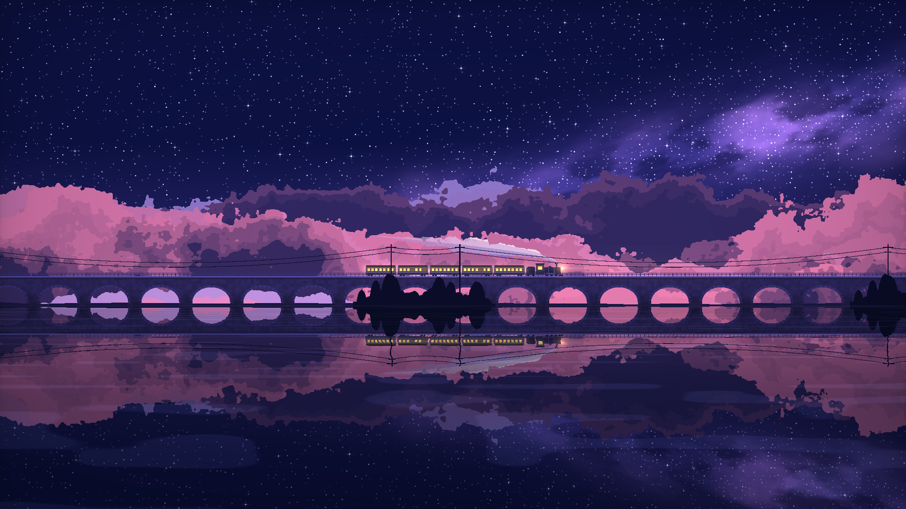

两份项目 Skill，两个运行案例，保留能解释实现关系的文档与真实效果图。
绘画素材与 Shader 混合；双向延伸、分层视差、山脚融合、遮挡和水面。

由 GLSL 绘制星河、层云、列车与石桥，反射源与场景共用时间。
先拆解，再复用合适的素材与代码，交付可操作的完整工作台。
保留现有效果，测量功能、画面与性能，输出 HTML 报告和离线包。
TA 拆解示例与动态运行案例分别保存。静态重组不表示运动素材已补齐；报告列明实际已测和未测范围。素材与上游代码按各自来源说明使用。